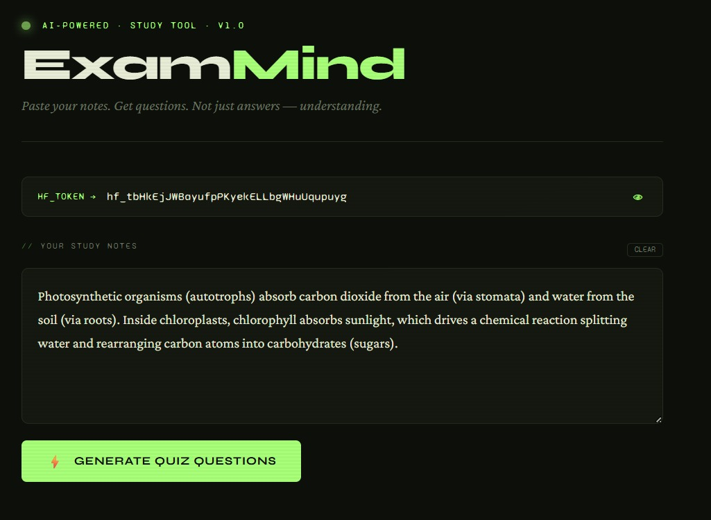
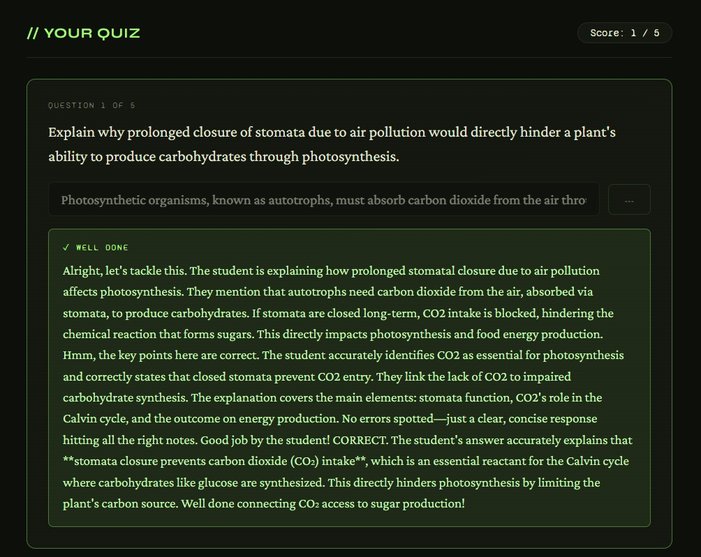

Learn the basics of ML and build your first intelligent web app — step by step.
Machine Learning is a branch of Artificial Intelligence in which a computer learns a pattern(model) from data points(training examples), instead of being directly programmed with fixed rules(steps).
Understanding ML
Most machine learning systems work using one of these core approaches.
There are 3 types of ML Model:
1. Regression
2. Classification
3. Generation
Dataset:
On this type of data, the linear regression machine learning algorithm can fit/train the linear model i.e.
ŷ
= mx + c.
These datapoints also appear in the scattered diagram.
Scattered Diagram :
A Classification Machine Learning model is similar to a Regression model, except that its outputs (y values) are discrete categories instead of continuous numerical values.
In a Generation ML model, both inputs (x's) and outputs (y's) are natural language strings.
All models on Hugging Face are accessed via a single routing endpoint:
Each of our demo app consists of index.html page and a server.js (Proxy Server).
In the request body from index.html, you simply specify the model name that is then posted to server.js:
{
"model": "deepseek-ai/DeepSeek-R1",
"messages": [...],
"token": "hf_..."
}const { model, messages, token } = payload;
const hfResponse = await fetch("https://router.huggingface.co/v1/chat/completions", {
method: "POST",
headers: { "Authorization": `Bearer ${token}` },
body: JSON.stringify({
model: model, // Tells the HF Router which model to use
messages: messages
})
});Here are some other models, we are handing out to you to use in your sample apps.
ExamMind is an AI study assistant that converts notes into interactive quizzes. It uses Qwen to identify key concepts and generate real-time evaluations, demonstrating how AI can solve complex educational challenges with a simple web interface.
Get the full ExamMind sample webapp folder to explore, modify, and learn on your own machine.
Ensure you have these essentials ready on your machine.
Runtime engine to run JavaScript on your server.
Basic Code editor for development.
API key to access ML models.
When you click the "Generate Quiz" button, JavaScript inside your index.html
sends your notes to your local server. The code looks like this:
const res = await fetch('/analyze', {
method: 'POST',
headers: { 'Content-Type': 'application/json' },
body: JSON.stringify({
model: "Qwen/Qwen2.5-7B-Instruct",
messages: [
{ role: "system", content: "Generate 5 quiz questions..." },
{ role: "user", content: "Here are my notes: ..." }
],
max_tokens: 600
})
});callHF()The callHF() function is a reusable wrapper that handles the
communication between your frontend and the proxy server.
// Reusable function to call the server
async function callHF(token, messages, maxTokens) {
const res = await fetch('/analyze', {
method: 'POST',
headers: { 'Content-Type': 'application/json' },
body: JSON.stringify({
model: HF_MODEL, messages, max_tokens: maxTokens, token
})
});
const data = await res.json();
return data.choices[0].message.content;
}This server.js file does two things: (a) serves your HTML
page, and (b) securely forwards requests to Hugging Face.
// 1. Load built-in Node.js tools
const http = require("http");
const fs = require("fs");
const PORT = 3000;
// 2. Create the server
const server = http.createServer(async (req, res) => {
// PART A: Serve the HTML page
if (req.method === "GET") {
fs.readFile("./index.html", (err, data) => {
res.writeHead(200, { "Content-Type": "text/html" });
res.end(data);
});
return;
}
// PART B: Forward AI requests to Hugging Face
if (req.method === "POST" && req.url === "/analyze") {
// ... Code that securely sends notes to Hugging Face API ...
}
});
// 3. Start listening
server.listen(PORT, () => {
console.log(`Server running at http://localhost:${PORT}`);
});You may now have a question: "Why are we using a server? Why can't the HTML page directly talk to Hugging Face?"
There are two major reasons. First, the security problem: your API key would be visible in the browser for anyone to steal. Second, the CORS problem: browsers block direct requests to Hugging Face for security reasons.
What is CORS? It's a browser security rule (Cross-Origin Resource Sharing). When your page
at localhost:3000 tries to call another domain, the browser blocks it
unless
that domain explicitly permits it.
The Solution: Our Node.js server acts as a "Proxy" (a middleman). It securely holds your API key and handles the communication with Hugging Face, bypassing browser restrictions entirely.
Step 4 showed you the skeleton. Now let's look at the actual code inside the POST handler — this is where the server secretly talks to Hugging Face on behalf of your browser.
let body = "";
req.on("data", chunk => { body += chunk; });
req.on("end", async () => {
const payload = JSON.parse(body);
const { model, messages, max_tokens, token } = payload;
// The actual API call to Hugging Face
const hfResponse = await fetch(
"https://router.huggingface.co/v1/chat/completions",
{
method: "POST",
headers: {
"Authorization": `Bearer ${token}`,
"Content-Type": "application/json"
},
body: JSON.stringify({ model, messages, max_tokens })
}
);
const data = await hfResponse.json();
res.writeHead(hfResponse.status, { "Content-Type": "application/json" });
res.end(JSON.stringify(data));
});Follow this interactive guide to launch your application.
Press the Windows Key, type "Terminal", and hit Enter.
Type these commands into your terminal to start the proxy server.
C:\AIML\users\[userName] > cd nodeproxy
C:\AIML\users\[userName]\nodeproxy > node server.js
✅ ExamMind running at http://localhost:3000Success! Your app is running. To stop the server later, press Ctrl + C in the terminal.

[BEFORE: Generate Quiz]

[AFTER: GENERATING QUIZ]
Today, people consume information from social media, websites, and news platforms very quickly. However, it is becoming harder to identify whether information is trustworthy, biased, or misleading.
Build an AI-powered platform that helps users analyze online content and better understand the reliability and tone of the information they read. The solution should encourage critical thinking and responsible information sharing.
Suggested Features
Generate an HTML app called TruthLens exactly similar to the attached index.html app for the given (also attached ) server.js. An asynchronous function in the HTML app should send social media content to the hugging face model deepseek-ai/DeepSeek-R1 and gets the reliability and tone of the content.